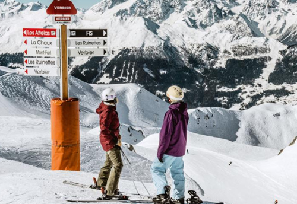
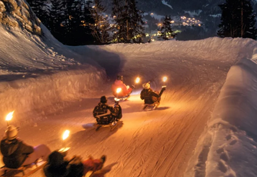
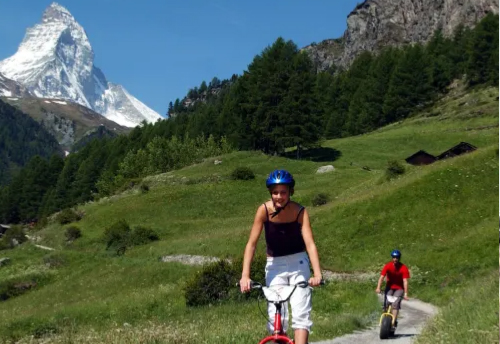
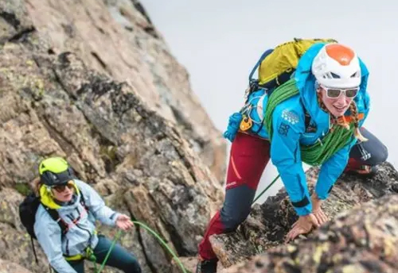

Wallis heeft een aantal skigebieden te bieden die iedere wintersporter wel op het lijstje heeft staan. Grote gebieden als "Les Quatre Vallees" en Zermatt, "Les Trois Vallees", maar ook skigebieden met de mooiste vergezichten van de Alpen, zoals het idyllische Saas-Fee en de Aletsch Arena. Er zijn weinig dorpen die mooier zijn dan het authentieke Grimentz of zoveel doen voor families als het rustige Grächen.
 Je vindt in Wallis dus zowel grote skigebieden als kleine pareltjes. De regio is uitstekend bereikbaar, mede dankzij de snelweg die door het Rhonedal loopt. Er is de laatste jaren behoorlijk wat geinvesteerd in nieuwe liften. Verbier(1470m), Nendaz(1400m), Crans(1500m), Montana(1500m), Saas-Fee(1798m) en Zermatt(1620m) zijn populaire skidorpen.
Zomers is het mogelijk afdalingen te doen met de dirtscooters en kickbikes, bergen te beklimmen, of prachtige wandeltochten te maken. In deze tweetalige regio (in het oosten spreekt men Duits, in het westen Frans) vind je misschien wel de beroemdste berg ter wereld, de Matterhorn bij Zermatt. De uitzichten in Wallis zijn fenomenaal, hetzij op het Rhonedal of op reuzen als de Mont Blanc.
 